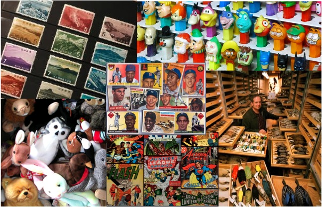
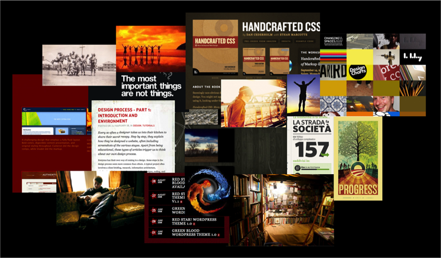

Research: Mood Boards
We based our final mood board on the feelings we identified as how collectors would feel about their items and also how they would feel if they were able to successfully barter to add to their collections. We selected our images and colors based on these moods. As a final test, we ensured that there was a mood that we felt after looking at the board.
Final Mood Board
In our first attempt to create a moodboard, we looked at existing mood boards as shown in class. We first brainstormed words that came to mind when we thought about bartering and trading:
- Camaraderie
- Sustainability
- Vintageness
- Traditional
- Old World Romance
- Economical
- Empowering
- Environment
We then thought of images and colors to fit our list of words. We received feedback that the moodboard did not portray a mood at all. So, we improved on our first attempt by choosing words that portrayed "feelings" instead of words that represented "things". We also were able to identify fewer words because at this point, we had narrowed down our ideas.
Mood Board 1